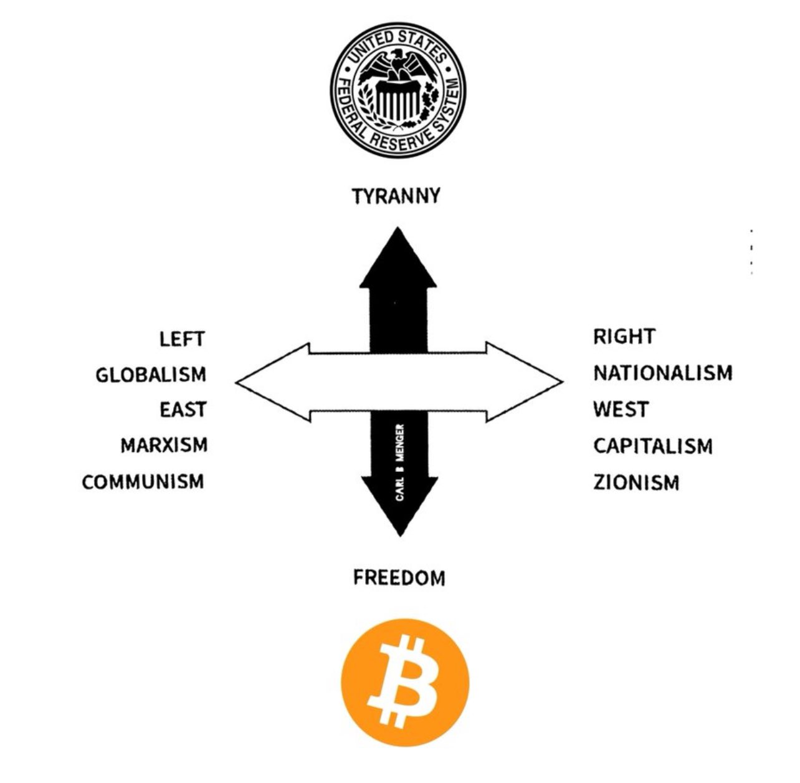
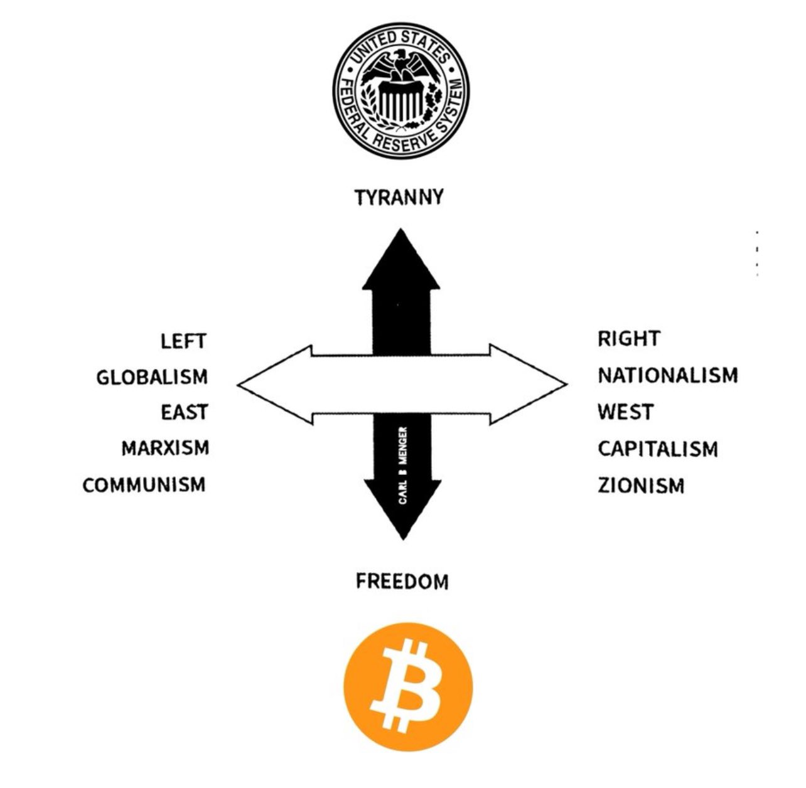

⚡️ The Sovereign Stack Begins at LSE
A society for those who see through the fiat veil.
“Bitcoin is not a coin. It’s a mirror, a map, and a tool of liberation.”
“It is the last firewall between human autonomy and digital totalitarianism.”
“This is not just a student group. This is the founding node of a sovereign signal infrastructure at LSE.”
ü߆ Why We Exist
The world is running a monetary simulation.
The pound is debased. The dollar is digital debt. CBDCs are control systems. Web3 is performative decentralization.
Bitcoin is something different. It’s:
- Open-source monetary law
- Mathematics encoded in sovereignty
- An ontological anchor in a collapsing consensus
We’re building the only society at LSE that teaches how to exit the simulation — economically, intellectually, spiritually.
üìú Our Manifesto
We are not maximalists. We are minimalists — seeking what is real.
- We reject the fiat illusion.
- We build with intent, not hype.
- We engage in symbolic warfare. Memes are our syntax.
- We self-custody truth.
- We onboard others with humility, precision, and fire.
“This is a dojo for economic dissent, open to all who seek clarity beyond compliance.”
üß≠ [Proposed] Upcoming Activities
üí• Proof-of-Practice Workshops
Hands-on sessions: self-custody, running a node, Lightning payments, FOSS tools.
üߨ Sovereign Salon Series
Bi-weekly philosophy forums on money, freedom, governance, Bitcoin vs. the state.
üéôÔ∏è Guest Speakers [In the works]
Experts from the Human Rights Foundation, Bitcoin Magazine, and grassroots adoption hubs.
üèõÔ∏è Flagship Event: 'The Future of Money'
A multi-university summit dissecting the collapse of fiat and rise of parallel economies.
üçª Decentralized Socials
Pub nights + game theory + real talk. (Non-alcoholic options always available.)
üß∞ What You‚Äôll Get
- A founding member seat in the most intellectually serious club at LSE
- Access to private Telegram group, events, and knowledge drops
- Training in Bitcoin sovereignty — for your mind, wallet, and future
- Early invites to leadership roles, speaker vetting, and node-building squads
This isn’t about clout. It’s about coherence. If you feel the call, follow it.
üëÅÔ∏è Visual Signal Library
 

“When you see Bitcoin not as a price chart but as a mirror of civilization’s soul — you’re ready.”
üï≥Ô∏è Join the Founding Node
I’m In →This is your entry point.
→ What Happens Next?
- Fill out the form with your LSE email
- Get access to the founding Telegram group
- Vote on our first salons and speakers
- Help shape the most important society at LSE
üü† Genesis Signal
“The Times 03/Jan/2009 Chancellor on brink of second bailout for banks”
Loading block height...
üïäÔ∏è For Newcomers
New to Bitcoin? Confused by crypto? Perfect. We’ll teach you everything — from Satoshi to self-custody.
No experience required. Just curiosity, openness, and courage.
üõ°Ô∏è Ethos
- Non-political, non-partisan, non-profit
- Compliant with all LSESU policies
- Open to all students — regardless of department, background, or belief
- No altcoin promotion, no scams, no “get-rich-quick” energy
- We disclose all funding and partnerships transparently
üìú Privacy & Integrity
We only collect your name and LSE email to confirm your membership and participation.
No spam. No surveillance. No selling data. Ever.
⚠️ Final Reminder
“The first Sovereign Salon begins Week 2, Michaelmas Term. If you’re not on the founding list before then — you’ll miss the genesis moment.”
Become one of the 20. Help launch the signal node. Shape the future of Bitcoin at LSE.